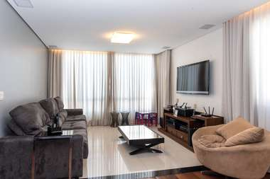
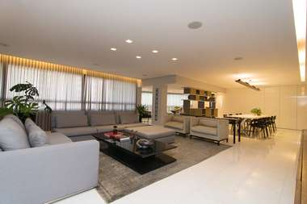

Melhor empreendimento da região de Osasco.
é tudo o que depende apenas de si próprio e não se submete a quaisquer condições e não tem restrições. Seus valores, suas conquistas, o seu mundo,tudo isso é absoluto, fazem parte de você e têmimportância fundamental na sua vida. Para se juntar ao que é natural e essencial para você, apresentamos oAbsoluto Eco Vida, design by Zatz.
Mais do que espaço, uma nova forma de pensar em arquitetura. Mais do que moradia, o conforto e a praticidade predominam em cada detalhe
você pode viver com mais conforto, menos preocupações e aproveitar cada momento. Matriz by Zatz tem uma localização privilegiada e oferece completa infraestrutura, fácil acesso aos principais pontos de Osasco e São Paulo, além de muitas opções de entretenimento. Mais uma vez, a Zatz se supera e traz para você a mais completa forma de viver com originalidade.
o lazer foi pensado para privilegiar a privacidade e o bem-estar e criar o clima perfeito para cada momento. Você vai se sentir em um resort no complexo aquático do Golden Park. Um magnífico espaço de convivência, perfeito para todas as idades.
para que você cuide de sua boa forma e adote um estilo de vida muito mais saudável não faltarão. Um dos destaques é o fitness, que oferece todas as condições para você se exercitar. Espaços reservados para a pratica de exercícios ou mesmo para a simples meditação, em pleno contato com o ar puro e a natureza.
localizada no coração da cidade de Osasco, na Rua Euclides da Cunha 277, é o espaço ideal para a realização de transações comerciais, bem assistidas por uma equipe de profissionais de grande experiência e formação na área de vendas e locação. Assessoria jurídica com advogada especialista na área de direito imobiliário e departamento especializado em preparar, montar e monitorar os processos para aquisição com financiamento bancário e saque de FGTS.
Nada do que é social e humano é mais real que as utopias. Na sua vertente eutópica, as utopias constituíram sempre o fundamento simbólico e mítico sem o qual nenhuma forma de organização social se sustenta, justifica ou sobrevive. E criam, tanto na vertente eutópica como na distópica, o vocabulário da revolução e da mudança: sem os amanhãs que cantam (ou choram) teríamos, em vez de História, um presente intemporal e eterno - como o dos faraós ou o de Francis Fukuyama. Aldous Huxley publicou o seu Brave New World em 1932. George Orwell, que não tinha em grande conta este livro ou o seu autor, publicou 17 anos depois a sua própria distopia, Nineteen Eighty-Four. Entre estas duas datas interpôs-se a Segunda Grande Guerra: não admira que na primeira a técnica básica da opressão do Estado fosse a manipulação genética e que na segunda, depois do descrédito em que o regime nazi lançou o eugenismo, as técnicas principais da opressão sejam a lavagem ao cérebro, a crueldade gratuita e a manipulação da linguagem. Nada do que é social e humano é mais real que as utopias. Na sua vertente eutópica, as utopias constituíram sempre o fundamento simbólico e mítico sem o qual nenhuma forma de organização social se sustenta, justifica ou sobrevive. E criam, tanto na vertente eutópica como na distópica, o vocabulário da revolução e da mudança: sem os amanhãs que cantam (ou choram) teríamos, em vez de História, um presente intemporal e eterno - como o dos faraós ou o de Francis Fukuyama. Aldous Huxley publicou o seu Brave New World em 1932. George Orwell, que não tinha em grande conta este livro ou o seu autor, publicou 17 anos depois a sua própria distopia, Nineteen Eighty-Four. Entre estas duas datas interpôs-se a Segunda Grande Guerra: não admira que na primeira a técnica básica da opressão do Estado fosse a manipulação genética e que na segunda, depois do descrédito em que o regime nazi lançou o eugenismo, as técnicas principais da opressão sejam a lavagem ao cérebro, a crueldade gratuita e a manipulação da linguagem.Nada do que é social e humano é mais real que as utopias. Na sua vertente eutópica, as utopias constituíram sempre o fundamento simbólico e mítico sem o qual nenhuma forma de organização social se sustenta, justifica ou sobrevive. E criam, tanto na vertente eutópica como na distópica, o vocabulário da revolução e da mudança: sem os amanhãs que cantam (ou choram) teríamos, em vez de História, um presente intemporal e eterno - como o dos faraós ou o de Francis Fukuyama. Aldous Huxley publicou o seu Brave New World em 1932. George Orwell, que não tinha em grande conta este livro ou o seu autor, publicou 17 anos depois a sua própria distopia, Nineteen Eighty-Four. Entre estas duas datas interpôs-se a Segunda Grande Guerra: não admira que na primeira a técnica básica da opressão do Estado fosse a manipulação genética e que na segunda, depois do descrédito em que o regime nazi lançou o eugenismo, as técnicas principais da opressão sejam a lavagem ao cérebro, a crueldade gratuita e a manipulação da linguagem.Nada do que é social e humano é mais real que as utopias. Na sua vertente eutópica, as utopias constituíram sempre o fundamento simbólico e mítico sem o qual nenhuma forma de organização social se sustenta, justifica ou sobrevive. E criam, tanto na vertente eutópica como na distópica, o vocabulário da revolução e da mudança: sem os amanhãs que cantam (ou choram) teríamos, em vez de História, um presente intemporal e eterno - como o dos faraós ou o de Francis Fukuyama. Aldous Huxley publicou o seu Brave New World em 1932. George Orwell, que não tinha em grande conta este livro ou o seu autor, publicou 17 anos depois a sua própria distopia, Nineteen Eighty-Four. Entre estas duas datas interpôs-se a Segunda Grande Guerra: não admira que na primeira a técnica básica da opressão do Estado fosse a manipulação genética e que na segunda, depois do descrédito em que o regime nazi lançou o eugenismo, as técnicas principais da opressão sejam a lavagem ao cérebro, a crueldade gratuita e a manipulação da linguagem.Nada do que é social e humano é mais real que as utopias. Na sua vertente eutópica, as utopias constituíram sempre o fundamento simbólico e mítico sem o qual nenhuma forma de organização social se sustenta, justifica ou sobrevive. E criam, tanto na vertente eutópica como na distópica, o vocabulário da revolução e da mudança: sem os amanhãs que cantam (ou choram) teríamos, em vez de História, um presente intemporal e eterno - como o dos faraós ou o de Francis Fukuyama. Aldous Huxley publicou o seu Brave New World em 1932. George Orwell, que não tinha em grande conta este livro ou o seu autor, publicou 17 anos depois a sua própria distopia, Nineteen Eighty-Four. Entre estas duas datas interpôs-se a Segunda Grande Guerra: não admira que na primeira a técnica básica da opressão do Estado fosse a manipulação genética e que na segunda, depois do descrédito em que o regime nazi lançou o eugenismo, as técnicas principais da opressão sejam a lavagem ao cérebro, a crueldade gratuita e a manipulação da linguagem.Nada do que é social e humano é mais real que as utopias. Na sua vertente eutópica, as utopias constituíram sempre o fundamento simbólico e mítico sem o qual nenhuma forma de organização social se sustenta, justifica ou sobrevive. E criam, tanto na vertente eutópica como na distópica, o vocabulário da revolução e da mudança: sem os amanhãs que cantam (ou choram) teríamos, em vez de História, um presente intemporal e eterno - como o dos faraós ou o de Francis Fukuyama. Aldous Huxley publicou o seu Brave New World em 1932. George Orwell, que não tinha em grande conta este livro ou o seu autor, publicou 17 anos depois a sua própria distopia, Nineteen Eighty-Four. Entre estas duas datas interpôs-se a Segunda Grande Guerra: não admira que na primeira a técnica básica da opressão do Estado fosse a manipulação genética e que na segunda, depois do descrédito em que o regime nazi lançou o eugenismo, as técnicas principais da opressão sejam a lavagem ao cérebro, a crueldade gratuita e a manipulação da linguagem.Nada do que é social e humano é mais real que as utopias. Na sua vertente eutópica, as utopias constituíram sempre o fundamento simbólico e mítico sem o qual nenhuma forma de organização social se sustenta, justifica ou sobrevive. E criam, tanto na vertente eutópica como na distópica, o vocabulário da revolução e da mudança: sem os amanhãs que cantam (ou choram) teríamos, em vez de História, um presente intemporal e eterno - como o dos faraós ou o de Francis Fukuyama. Aldous Huxley publicou o seu Brave New World em 1932. George Orwell, que não tinha em grande conta este livro ou o seu autor, publicou 17 anos depois a sua própria distopia, Nineteen Eighty-Four. Entre estas duas datas interpôs-se a Segunda Grande Guerra: não admira que na primeira a técnica básica da opressão do Estado fosse a manipulação genética e que na segunda, depois do descrédito em que o regime nazi lançou o eugenismo, as técnicas principais da opressão sejam a lavagem ao cérebro, a crueldade gratuita e a manipulação da linguagem.